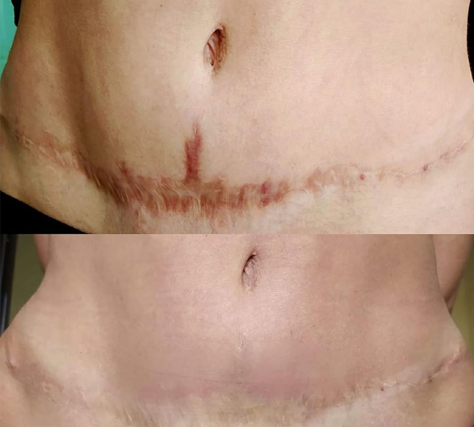
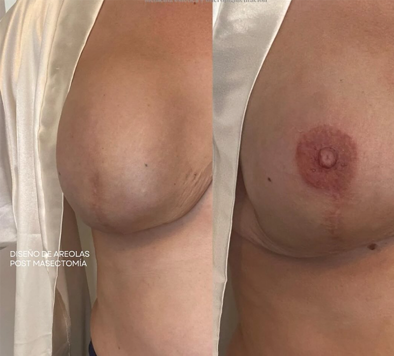

Nuestros servicios > Microblanding y Micropigmentación
|

Camuflaje de Cicatrices |
El camuflaje de cicatrices es un procedimiento diseñado para minimizar la visibilidad de cicatrices y mejorar la apariencia de la piel. |
|

Areolas Realistas |
La reconstrucción de areolas es una técnica avanzada que permite restaurar la apariencia natural del pecho después de una mastectomía. Este procedimiento es esencial para muchas mujeres que desean recuperar su confianza. |

Cejas |
El microblading de cejas es una técnica semipermanente que redefine y da forma a tus cejas con resultados naturales. Perfecto para quienes buscan un look más definido y armonioso. |

Labios |
La micropigmentación de labios es un tratamiento estético que mejora el color y la forma de tus labios, brindándoles un aspecto más definido y voluminoso. |
Estrías |
El camuflaje de estrías es una técnica avanzada de micropigmentación que consiste en aplicar pigmentos en las áreas afectadas, logrando que las estrías se mezclen con el tono natural de tu piel |

Vitiligo |
El camuflaje de estrías es una técnica avanzada de micropigmentación que consiste en aplicar pigmentos en las áreas afectadas, logrando que las estrías se mezclen con el tono natural de tu piel |